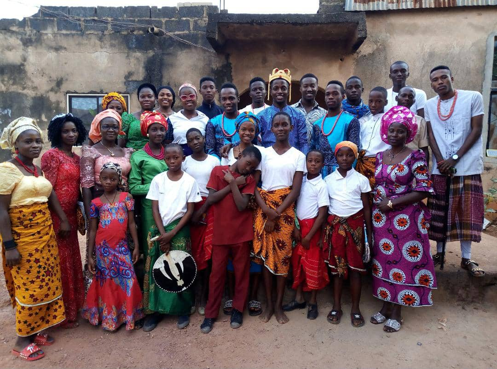
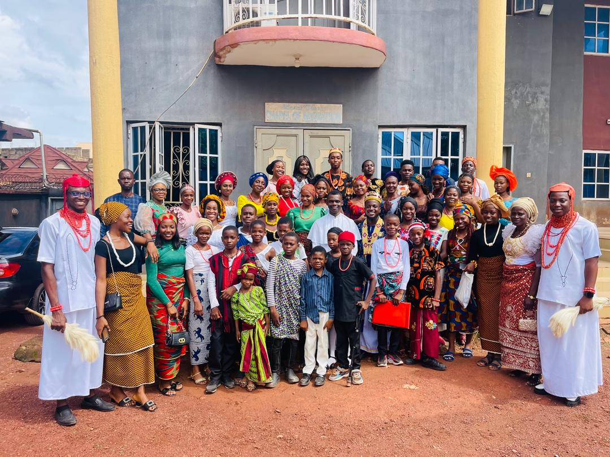

Welcom To Voice Of Angels Choir (VOAC)

In Unity We Stand

Music is the language of the spirit it opens the secret of life bringing peace, abolisheing strife. Because of that where words fail, music speaks. where word leave off, music begins. Music, once admitted to the soul, becomes a sort of spirit, and never dies, why because it touches us emotionally where words alone can't.
Read more
In Unity We Sing

Music, when soft voices die, vibrates in the memory. It is an agreeable harmony for the honor of God and the permissible delights of the soul. They are not more than five music notes, yet the combination of these five give rise to more melodies than can ever be heard. Music is healing and thus holds thing together
Read more
Sing Praises: To The Lord!!
See more
The Audio Section
See more